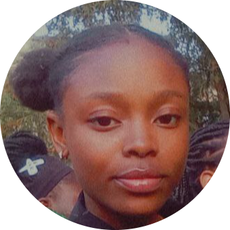

Nwamata Ogochukwu's Portfolio

Currently a Computer Science student of Covenant University aspiring to become a programmer and data scientist.
My aim: To be creative, innovative and Unique in every Task I set out to do.
Motto: Delivering value and skill without compromise...
Education
- Primary Education: MARYLAND CONVENT PRIVATE SCHOOL
- Secondary Education: Babcock Academy
- Tietiary Institution: Covenant University
Work Experience
- Part time job as a cashier in a mobile money office : 1 year experience 2021/2022
Skills
- A c language programmer: Intermediate learner
- A visual basic programmer: Begginer
- A Html programmer: Intermediate Learner
My Hobbies
Contact